Till elevmaterialet
Elens grunder
steg för steg
Vi följer samma lampa och bygger på förklaringen efter hand. Börja med strömvägen. Fortsätt sedan till spänning, resistans och beräkningar.
1. Lampan behöver en hel strömväg
En arbetslampa får sin matning från ett batteri. Batteriet har två poler, plus och minus. Lampan har två anslutningar. Vi börjar med att följa hur dessa delar hör ihop.
En ledare från plus till lampan räcker inte. Lampans andra anslutning behöver också en väg tillbaka till batteriet. När båda förbindelserna är hela har vi en sluten elektrisk krets. I vår modell kan lampan då lysa.
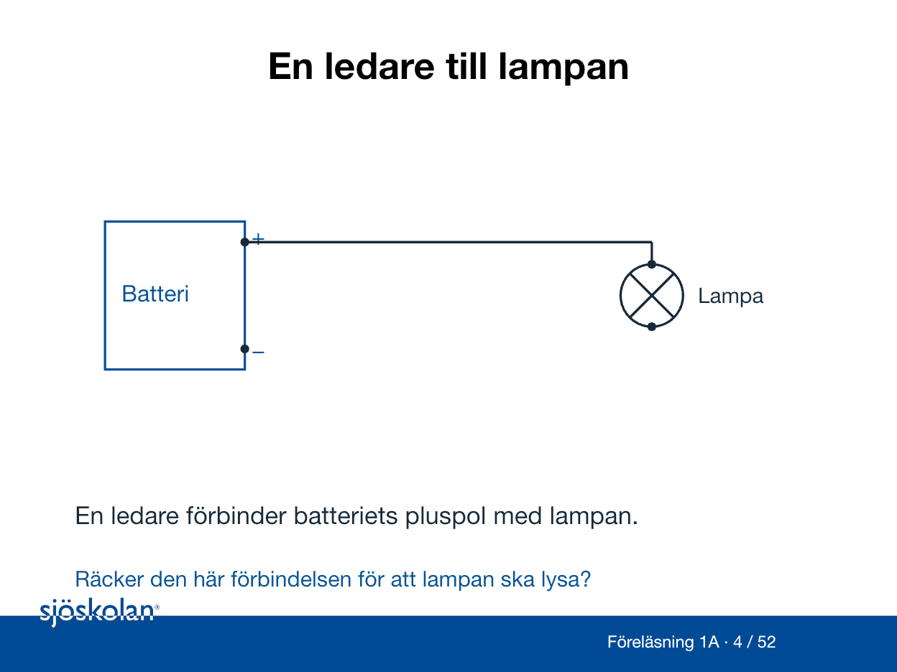
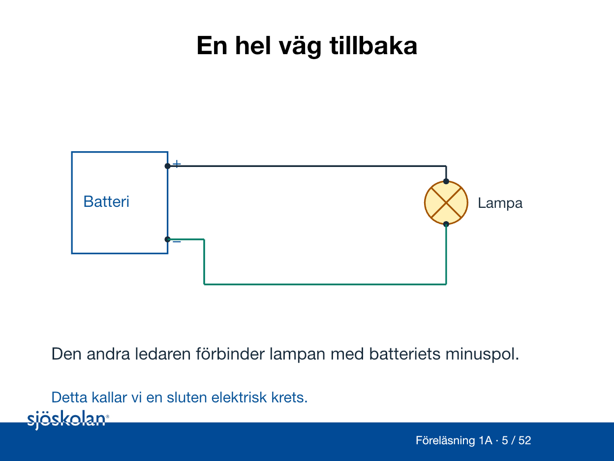
2. Brytaren öppnar och sluter vägen
En brytare kan skapa ett avbrott i strömvägen. När kontakten är öppen slocknar lampan i modellen. När kontakten sluts blir vägen hel igen.
Nu kan vi sätta namn på funktionerna. Batteriet är källan som tillför elektrisk energi. Lampan är lasten som omvandlar energin till ljus och värme. En motor kan också vara en last.
Ledaren tillbaka till batteriets minuspol kallas återledare i vår tvåledarkrets. Den ingår i den normala strömvägen. Återledare, skyddsledare och fartygsskrov har olika betydelser. Skrovet är inte automatiskt samma sak som minus.
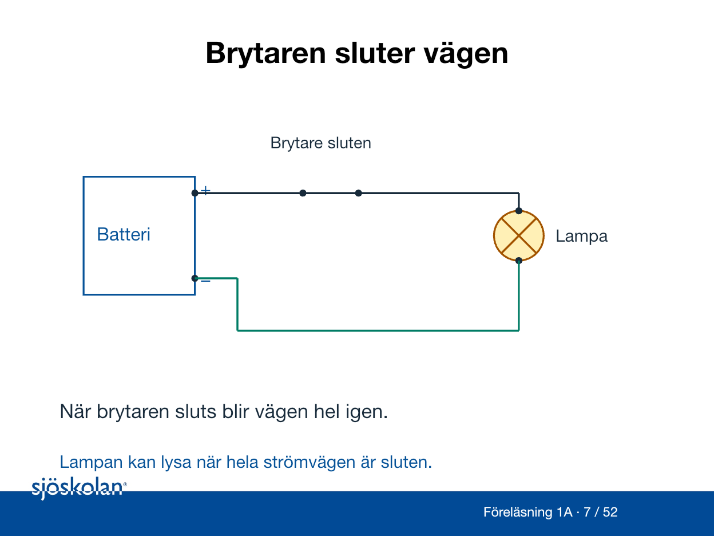
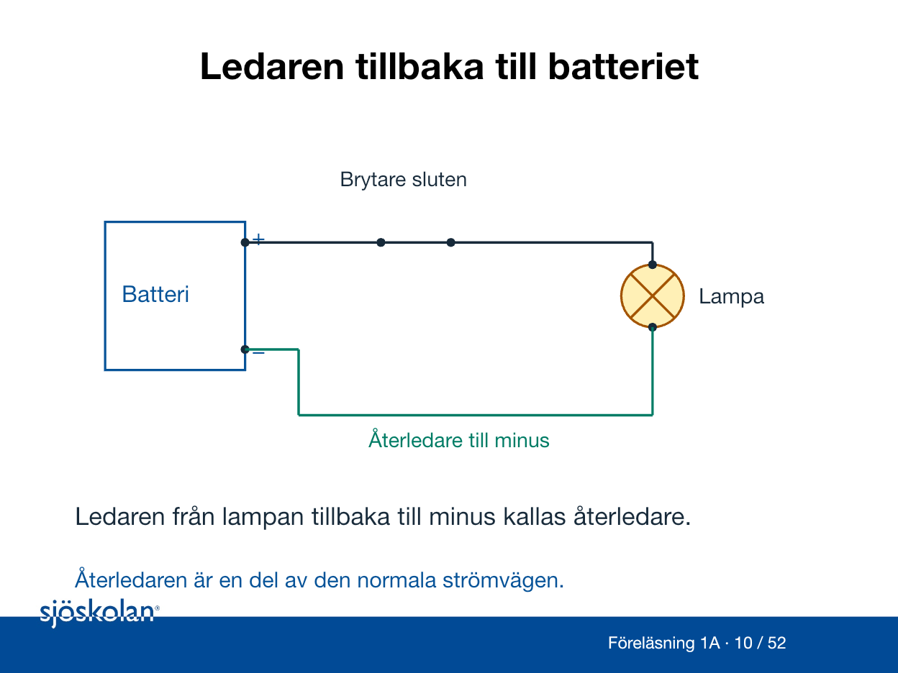
3. Ström beskriver laddning som passerar
I metall finns rörliga laddningsbärare, elektroner. Elektrisk laddning är en egenskap hos dem. Ström beskriver hur mycket laddning som passerar genom ledaren varje sekund. Strömmens enhet är ampere, A.
I en enkel sluten krets utan förgreningar går samma stationära ström före och efter lampan. Lampan omvandlar energi till ljus och värme. Strömmen förbrukas inte i lampan.
Vi följer konventionell strömriktning från plus genom den yttre kretsen till minus. Elektronernas rörelse i metall går i motsatt riktning. I de första exemplen använder vi likström, DC, med bestämd riktning.
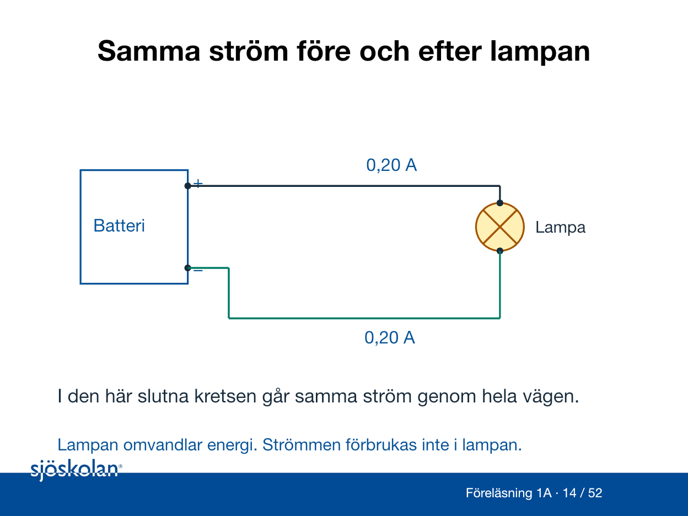
4. Spänning gäller mellan två punkter
På batteriet står 12 V. Det är den nominella spänningen, ett angivet värde för batteriet eller systemet. Verklig spänning kan variera med driftläget.
Vi kan tänka på elektrisk potential som en elektrisk nivå. Skillnaden mellan två sådana nivåer kallas spänning. Spänningen mellan batteriets poler anges i volt, V.
Mätaren i bilden har två anslutningar eftersom den jämför två punkter. Ström handlar i stället om laddning som passerar genom en väg. Därför kan batteriet ha 12 V mellan polerna även när en öppen brytare gör lastströmmen noll.
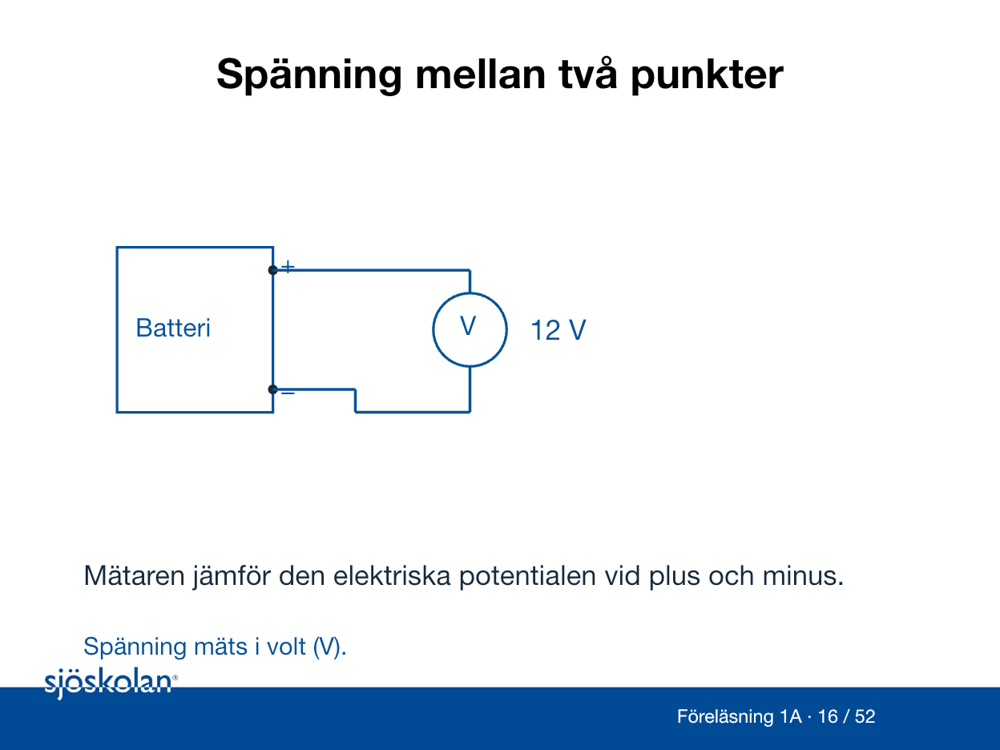
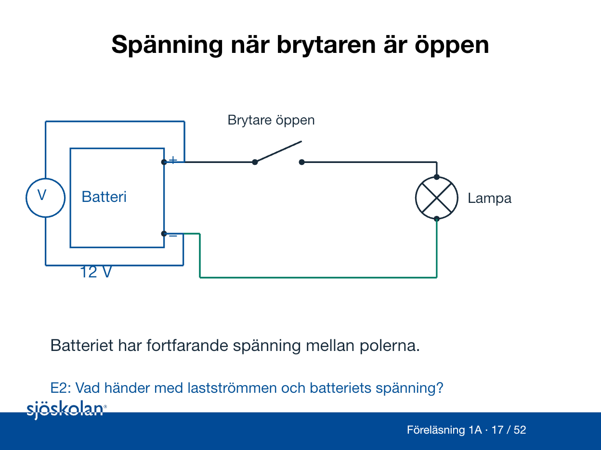
5. Olika resistans ger olika ström
För den första beräkningen ersätter vi lampan med en resistor. Det är en komponent som ofta kallas motstånd. Vi antar en ohmsk resistor med oförändrade egenskaper under beräkningen.
En resistor på 1 000 Ω leder 12 mA när den får 12 V. En resistor på 2 000 Ω leder 6 mA vid samma spänning. Det är den större resistansen som ger mindre ström.
Resistans är egenskapen och mäts i ohm, Ω. Resistor är komponenten. I yrkesspråket används motstånd ofta för båda.
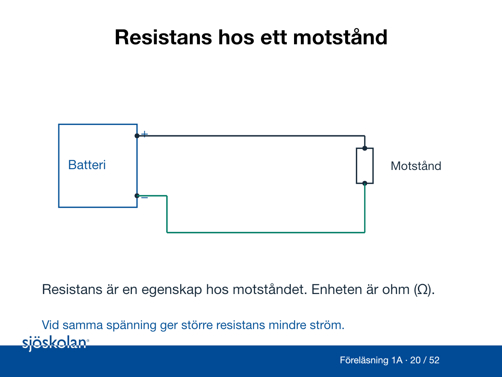
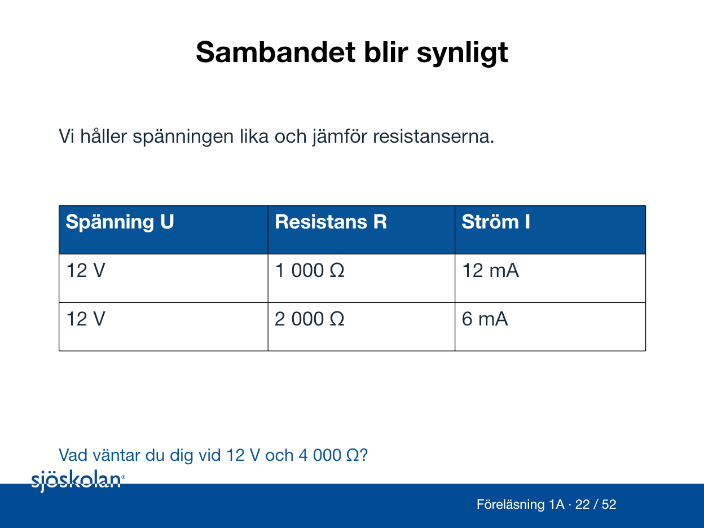
6. Enheterna före uträkningen
Kilo betyder tusen. Därför är 1 kΩ = 1 000 Ω och 2 kΩ = 2 000 Ω.
Milli betyder en tusendel. Därför är 1 mA = 0,001 A och 6 mA = 0,006 A. Ett värde består alltid av både ett tal och en enhet.
I formler använder vi U för spänning, I för ström och R för resistans. Bokstaven för storheten och enheten är olika saker. Exempelvis betyder I = 6 mA att strömmen är sex milliampere.
7. Sambandet som Ohms lag beskriver
Vi har sett att större resistans ger mindre ström vid samma spänning. Ohms lag ger oss ett sätt att räkna detta. När vi söker strömmen skriver vi I = U/R.
Först skriver vi givna värden. Sedan räknar vi med volt och ohm så att svaret blir ampere. Sist kan vi skriva om svaret till milliampere.
Exempel: 12 V över 2 kΩ. Vi skriver 2 kΩ som 2 000 Ω. Då blir I = 12/2 000 A = 0,006 A = 6 mA.
Nästa steg är att fylla i en liknande uträkning med stöd. Därefter använder du samma metod på arbetsbladets egen uppgift.
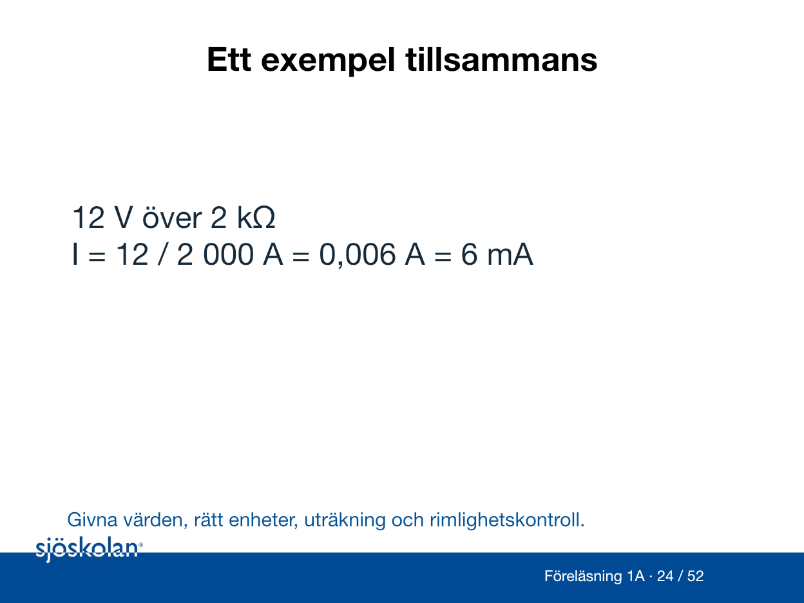
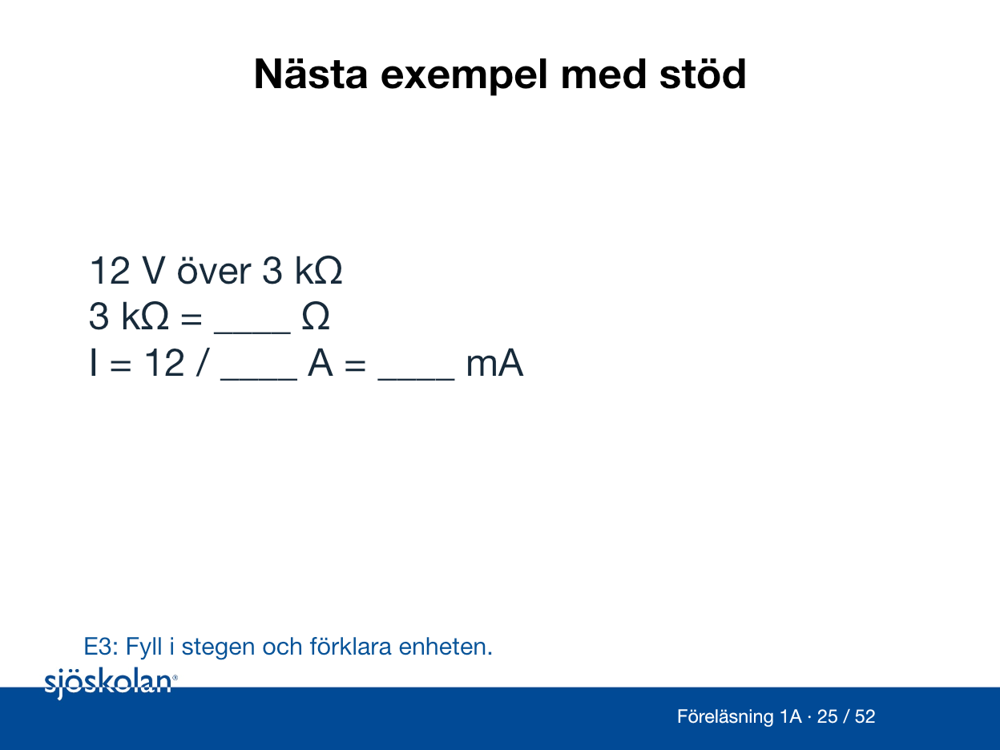
8. Två lampor med varsin strömväg
Två lampor kan ha varsin gren mellan samma plus- och minusanslutningar. Det kallas parallellkoppling. Varje gren kan då ge sin lampa en hel strömväg.
I vår idealmodell får båda lamporna 12 V. Ett avbrott i en gren kan släcka bara den lampan. Den andra grenen kan fortfarande vara hel. Ett avbrott i en gemensam återledare kan däremot bryta båda strömvägarna.
Följ en lampa i taget genom hela kretsen innan du drar en slutsats.
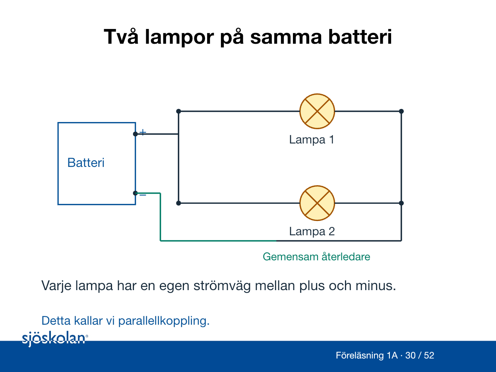
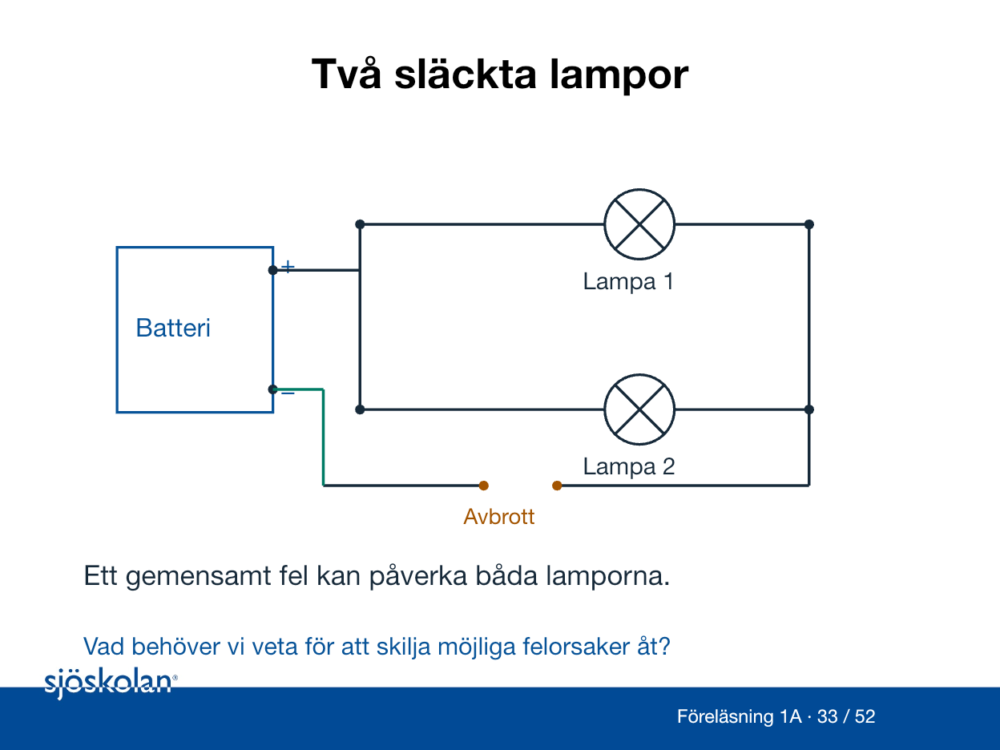
9. Funktion och elektrisk säkerhet
En dålig anslutning kan ha förhöjd resistans och bli varm under belastning. Lampan kan fortfarande lysa. Funktion ensam bevisar därför inte att hela kretsen är säker.
Isolation skiljer elektriskt ledande delar åt. En kapsling är höljet runt utrustningen. En säkring är ett överströmsskydd som kan bryta vid för hög ström enligt sina villkor. Skydden har olika uppgifter.
Ett batteri kan ge stor felström även vid låg spänning. Fel kan ge värme eller brand. I vissa förlopp kan en ljusbåge uppstå, en elektrisk urladdning genom luften. Säker arbetsmetod och rätt skydd behöver utgå från det verkliga systemet.
10. Konsekvenser ombord
En länspump pumpar bort vatten från avsedda utrymmen. Om en gemensam matning försörjer både pumpen och arbetsbelysningen påverkar en frånkoppling båda funktionerna.
Inför en åtgärd behövs därför både elektriskt underlag och kunskap om driftens behov. Identifiera rätt krets och möjliga matningar. Samordna med driftansvarig och klarlägg behovet av länsning och ersättningsbelysning.
Salt, fukt och vibrationer kan påverka utrustningen ombord. En lampa som lyser eller ett enstaka mätvärde ersätter inte en bedömning av risker och skydd.
11. En slutsats behöver tydligt underlag
Skriv vilken krets och vilket driftläge som avses. Ange mätpunkter och värden med enheter. Skilj det du observerat från det du tror kan vara en felorsak.
Exemplet ”12,0 V vid batteriet, 11,9 V över lampan, lampan lyser” beskriver en observation. Det säger inte att isolation eller alla skyddsfunktioner har kontrollerats.
Använd arbetsbladets avslutande uppgift för att förena beräkningen med en förklaring av strömvägen. Nästa föreläsning fördjupar riskbedömning och säkra arbetsrutiner.
Material till lektionen
Fördjupningen i presentationens bilder 41–52 tar upp effekt och energi, serie, spole och relä samt fler mät- och systemfrågor.